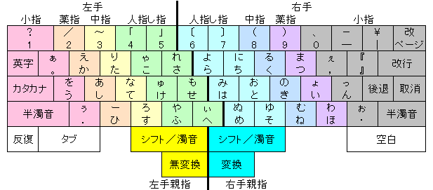

The Keyboard That Gave Every Key Three Faces
The Fujitsu OASYS 100 didn't add keys — it moved the shift key to the thumb and let every key carry three characters. A small anatomy-driven invention that became a Japanese national standard and a secret cult among writers.

Most of the museum's keyboards are arguments about placement: the Velotype argues about the word, the Twiddler about the thumb, the BAT about the palm. The Fujitsu OASYS 100, announced in May 1980, is an argument about the shift key — and it is the strangest one in the family, because it asks you to notice a muscle you've never thought about.
Here is the setup. Japanese text has four dozen hiragana characters, not the handful of letters English makes do with. A keyboard that spelled them all with one key per character would sprawl past your shoulders. Most engineers' answer was to spread the board out and make you reach. Yasunori Kanda's team at Fujitsu answered with the thumb.
Look at any conventional keyboard and you'll see its quiet lie: the shift keys — the most frequently-pressed modifiers after the letters themselves — sit under your little fingers, the weakest digits on both hands. The OASYS moved the shift function to two dedicated keys at the bottom center, physically worked by the thumbs, the strongest and most dexterous digits you own. Because the thumb is built for sustained pressure, holding a thumb-shift while a finger on the same hand types one of its characters is a natural, low-effort gesture. Your hands never leave the home row.
And then the tripling. A normal shift key multiplies each key by two states: shifted and unshifted, the "a" you type and the "A" you mean. The OASYS multiplied every key by three. No shift, same-hand thumb shift, or opposite-hand thumb shift — each regular key produced three different characters, so the base hiragana, its second reading, and its voiced ("dakuon") variant all lived on a single physical key. All 48+ hiragana fit on just thirty keys in the home row. One key, three faces, selected not by reaching but by which thumb you happen to be holding down.
The layout was grounded in corpus frequency — Kanda's team studied how often every Japanese character actually appears and assigned the common ones to the easiest positions. And the conversion ritual was its own interface. Japanese composition requires turning phonetic kana into ideographic kanji, and the OASYS did it word by word: you typed the kana for a word, struck a thumb key, and the system flipped it to kanji on the spot. Because it worked one word at a time, there was almost no room for the grammatical-analysis errors that plagued the flashier rival phrase-level systems. Professionals preferred the predictability — type, strike, read — over the cleverness.
This is not a failed experiment. This is the opposite of the museum's usual arc. The thumb-shift layout became Japanese Industrial Standard JIS X 4064. Japanese writers, lawyers, and playwrights built devoted followings around it and reported typing "as fast as speaking." Enthusiasts still commission custom thumb-shift keyboards today, two decades into this century, long after the OASYS 100 itself was a memory.
What I love about the OASYS is that its invention is purely anatomical. It didn't add keys; it moved one, and multiplied every key in the bargain. Where the Velotype hands the spelling to a machine, the OASYS hands the modifying to a thumb — and in doing so, quietly proves that our keyboards' most maddening physical habit — the pinky straining up and away for that little shift key — was never a law of nature. It was just a decision someone made before anyone thought to count fingers. Fujitsu counted, and gave every character in a whole language a place to live.
We keep the text-entry family as a set of arguments about the finger. The OASYS is the argument that the shift key was the problem all along.